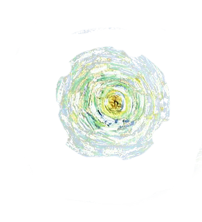

1889
Oil on canvas
73.7 x 92.1 cm
Notice the brush strokes. For the sky they swirl, each dab of color rolling with the clouds around the stars and moon. On the cypress tree they bend with the curve of the branches. The whole effect is ethereal and dreamlike. The hills easily roll down into the little village below. In contrast, the town is straight up and down, done with rigid lines that interrupt the flow of the brush strokes.
Tiny little trees soften the inflexibility of the town. Bringing nature into the unnaturalness of buildings.One of the biggest points of interest about this painting is that it came entirely from Van Gogh’s imagination. None of the scenery matches the area surrounding Saint-Paul or the view from his window. As a man who religiously paints what he sees, it’s a remarkable break from Van Gogh’s normal work.